Anonymous submission to ECCV 2026
Cross-modal music generation from text and visual inputs is uniquely challenging due to its subjective, one-to-many nature. Current methods face three major limitations: they are bottlenecked by scarce paired data, lack explicit one-to-many modeling, and isolate generation from retrieval.
We propose a unified framework for multimodal music generation and retrieval. Our core innovation is a music semantic anchor—a semantic embedding space defined by a dedicated music encoder (MuQ)—that decouples multimodal understanding from acoustic synthesis. We employ a two-stage training pipeline:
During inference, the predicted anchor embedding simultaneously acts as a condition for acoustic synthesis and as a query for music retrieval—unifying generation and retrieval within a single forward pass, without requiring text as an intermediate representation.
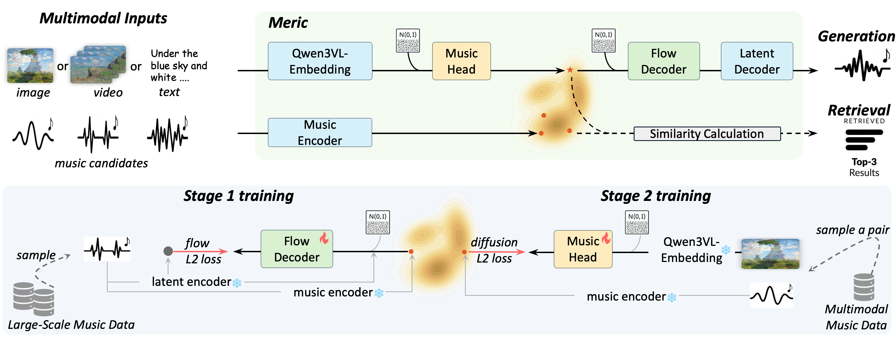
Samples from test sets. Each card shows an input image and the music generated by Meric. Click to play.
The same visual input can inspire diverse yet equally valid compositions. The Music Head introduces controlled stochasticity: different random seeds yield different music semantic predictions, producing diverse audio outputs from a single image. Use Play All to hear each variation sequentially.
Samples from test sets. Each card shows a text prompt and the music generated by Meric. Click to play.
Compare audio generated by our method against baselines across multiple benchmarks. Click any play button to listen; only one track plays at a time. Use Play All to hear each method sequentially.
Compare text-to-music generation against dedicated T2M baselines on MusicCaps. Click any play button to listen; only one track plays at a time. Use Play All to hear each method sequentially.
Audio comparisons for key design choices. Click any player to listen; compare across conditions for the same input image.
The Music Head uses DDIM sampling to iteratively refine noise into a music semantic embedding. A single denoising step (s=1) produces collapsed, low-diversity embeddings; s≥5 are perceptually indistinguishable (p>0.2 in human MOS study), though s=20 best matches the ground-truth distribution.
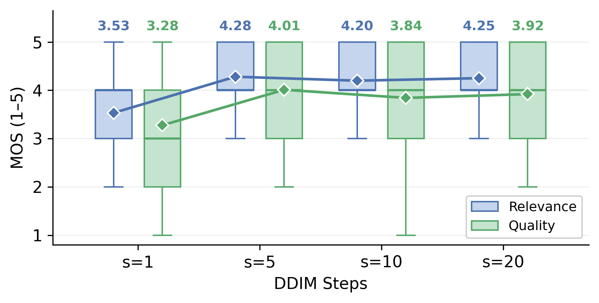
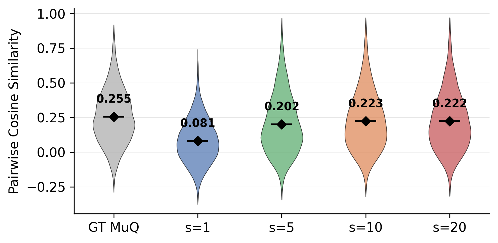
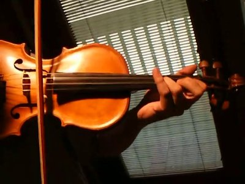
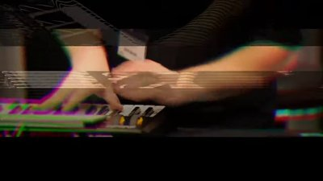
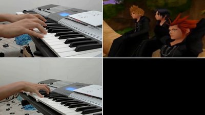
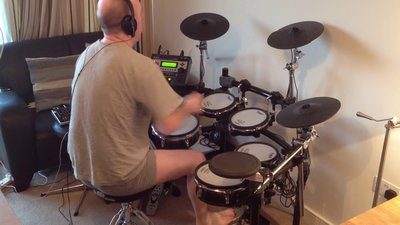
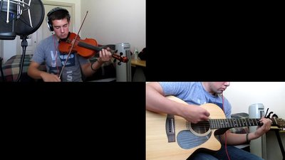
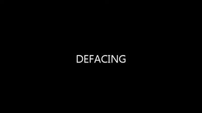
Five projector architectures map frozen vision-encoder embeddings to the music anchor space. Linear (Contrastive) achieves the best retrieval but catastrophic generation quality (FAD 6.6× worse); Linear (MSE) produces good FAD but collapses retrieval by mapping to the conditional mean; VAE methods strike a moderate balance but share MSE’s deterministic collapse. Only the Music Head (diffusion-based) resolves this trade-off—best FAD with competitive retrieval—because iterative denoising produces predictions that are individually accurate yet collectively diverse.
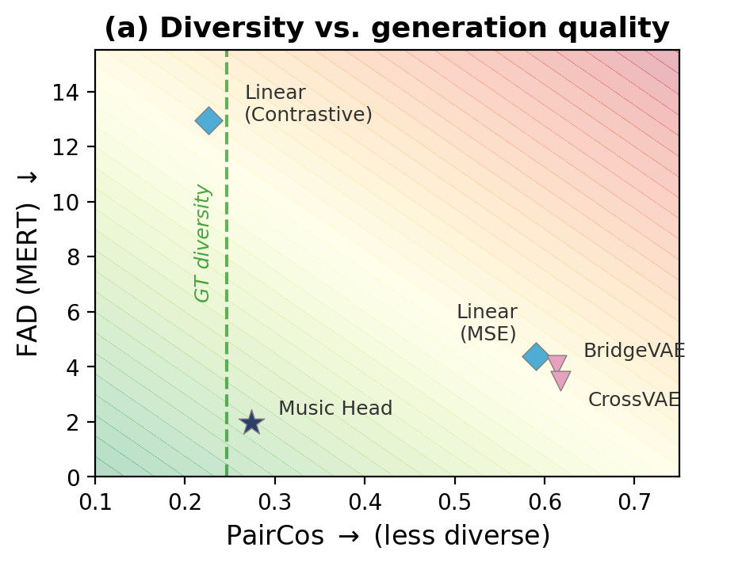
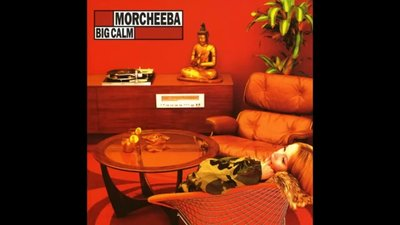
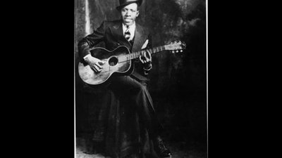
Replacing CLIP ViT-H-14 (1024-d) with Qwen3-VL-Embedding (2048-d) consistently improves generation fidelity (FADMERT: 2.54 → 1.95 on MelBench), confirming that richer vision-language representations benefit cross-modal translation even with a frozen backbone. Both use the same Music Head projector.
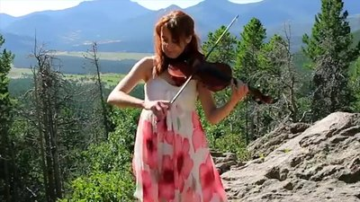
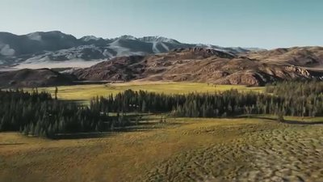
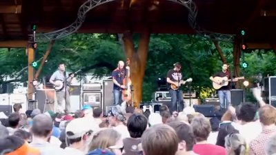
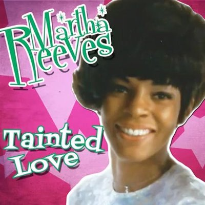
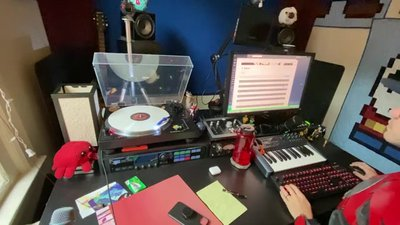